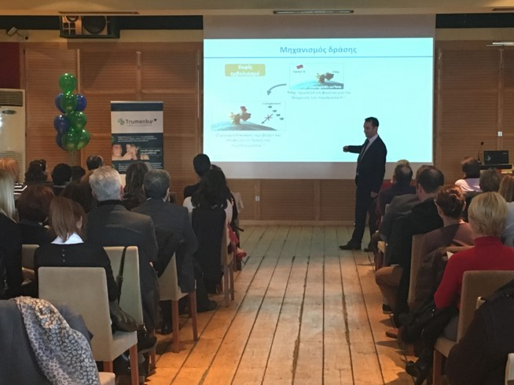
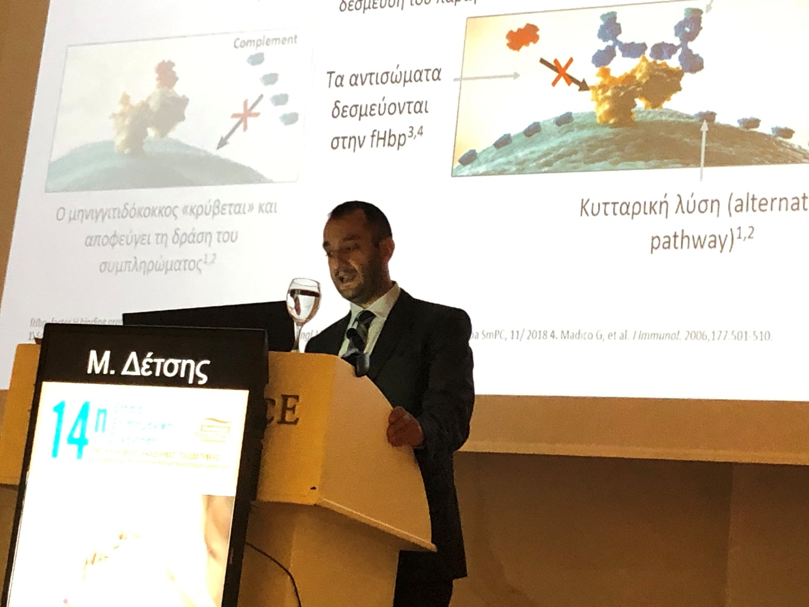

Ο Ιατρός · Επιστημονικό έργο
Επιστημονικό Έργο
Δημοσιεύσεις σε διεθνή επιστημονικά περιοδικά με κριτές και κεφάλαιο βιβλίου, με αντικείμενο τη Δημόσια Υγεία, την Επιδημιολογία και τα Λοιμώδη Νοσήματα.
Δημοσιεύσεις
Διεθνή επιστημονικά περιοδικά με κριτές
International peer reviewed journals

Παρουσιάσεις
Επιστημονική παρουσία σε παιδιατρικά συνέδρια.

Τεκμηρίωση
Δημόσια Υγεία, Επιδημιολογία και Λοιμώδη Νοσήματα.
- Flokas ME, Detsis M, Alevizakos M, Mylonakis E. Prevalence of ESBL-producing Enterobacteriaceae in paediatric urinary tract infections: A systematic review and meta-analysis. J Infect. 2016 Jul 28. doi: 10.1016/j.jinf.2016.07.014. Review.
- Muhammed M, Flokas ME, Detsis M, Alevizakos M, Mylonakis E. Comparison Between Carbapenems and β-Lactam/β-Lactamase Inhibitors in the Treatment for Bloodstream Infections Caused by Extended-Spectrum β-Lactamase-Producing Enterobacteriaceae: A Systematic Review and Meta-Analysis. Open Forum Infect Dis. 2017 May 16;4(2):ofx099. doi: 10.1093/ofid/ofx099.
- Detsis M, Tsioutis C, Karageorgos SA, Sideroglou T, Hatzakis A, Mylonakis E. Factors Associated with HIV Testing and HIV Treatment Adherence: A Systematic Review. Curr Pharm Des. 2017;23(18):2568-2578. doi: 10.2174/1381612823666170329125820.
- Flokas ME, Karageorgos SA, Detsis M, Alevizakos M, Mylonakis E. Vancomycin-resistant enterococci colonisation, risk factors and risk for infection among hospitalised paediatric patients: a systematic review and meta-analysis. Int J Antimicrob Agents. 2017 May;49(5):565-572. doi: 10.1016/j.ijantimicag.2017.01.008. Review.
- Detsis M, Karanika S, Mylonakis E. ICU Acquisition Rate, Risk Factors, and Clinical Significance of Digestive Tract Colonization With Extended-Spectrum Beta-Lactamase-Producing Enterobacteriaceae: A Systematic Review and Meta-Analysis. Crit Care Med. 2017 Apr;45(4):705-714. doi: 10.1097/CCM.0000000000002253. Review.
- Alevizakos M, Detsis M, Grigoras CA, Machan JT, Mylonakis E. The Impact of Shortages on Medication Prices: Implications for Shortage Prevention. Drugs. 2016 Oct;76(16):1551-1558.
- Alevizakos M, Karanika S, Detsis M, Mylonakis E. Colonisation with extended-spectrum β-lactamase-producing Enterobacteriaceae and risk for infection among patients with solid or haematological malignancy: a systematic review and meta-analysis. Int J Antimicrob Agents. 2016 Dec;48(6):647-654. doi: 10.1016/j.ijantimicag.2016.08.021. Review.
- Nikolopoulos GK, Fotiou A, Kanavou E, Richardson C, Detsis M, Pharris A, Suk JE, Semenza JC, Costa-Storti C, Paraskevis D, Sypsa V, Malliori MM, Friedman SR, Hatzakis A. National Income Inequality and Declining GDP Growth Rates Are Associated with Increases in HIV Diagnoses among People Who Inject Drugs in Europe: A Panel Data Analysis. PLoS One. 2015 Apr 15;10(4):e0122367. doi: 10.1371/journal.pone.0122367.
- Tseroni M, Pervanidou D, Tserkezou P, Rachiotis G, Pinaka O, Baka A, Georgakopoulou T, Vakali A, Dionysopoulou M, Terzaki I, Marka A, Detsis M, Evlampidou Z, Mpimpa A, Vassalou E, Tsiodras S, Tsakris A, Kremastinou J, Hadjichristodoulou C; MALWEST Project. Field application of SD bioline malaria Ag Pf/Pan rapid diagnostic test for malaria in Greece. PLoS One. 2015 Mar 24;10(3):e0120367. doi: 10.1371/journal.pone.0120367.
- Papa A, Gavana E, Detsis M, Terzaki E, Veneti L, Pervanidou D, Georgakopoulou T, Marangos M, Koliopoulos G, Baka A, Tsiodras S, Tsakris A, Hadjichristodoulou C. Laboratory and surveillance studies following a suspected Dengue case in Greece, 2012. Int J Infect Dis. 2015 Jan;30:150-3. doi: 10.1016/j.ijid.2014.11.019.
- Pervanidou D, Detsis M, Danis K, Mellou K, Papanikolaou E, Terzaki I, Baka A, Veneti L, Vakali A, Dougas G, Politis C, Stamoulis K, Tsiodras S, Georgakopoulou T, Papa A, Tsakris A, Kremastinou J, Hadjichristodoulou C. West Nile virus outbreak in humans, Greece, 2012: third consecutive year of local transmission. Euro Surveill. 2014 Apr 3;19(13). pii: 20758.
- Vrioni G, Mavrouli M, Kapsimali V, Stavropoulou A, Detsis M, Danis K, Tsakris A. Laboratory and clinical characteristics of human West Nile virus infections during 2011 outbreak in southern Greece. Vector Borne Zoonotic Dis. 2014 Jan;14(1):52-8. doi: 10.1089/vbz.2013.1369.
- Gkolfinopoulou K, Bitsolas N, Patrinos S, Veneti L, Marka A, Dougas G, Pervanidou D, Detsis M, Triantafillou E, Georgakopoulou T, Billinis C, Kremastinou J, Hadjichristodoulou C. Epidemiology of human leishmaniasis in Greece, 1981-2011. Euro Surveill. 2013 Jul 18;18(29):20532.
- Nielsen J, Mazick A, Andrews N, Detsis M, Fenech TM, Flores VM, Foulliet A, Gergonne B, Green HK, Junker C, Nunes B, O’Donnell J, Oza A, Paldy A, Pebody R, Reynolds A, Sideroglou T, Snijders BE, Simon-Soria F, Uphoff H, van Asten L, Virtanen MJ, Wuillaume F, Mølbak K. Pooling European all-cause mortality: methodology and findings for the seasons 2008/2009 to 2010/2011. Epidemiol Infect. 2013 Sep;141(9):1996-2010. doi: 10.1017/S0950268812002580.
- Athanasakis K, Detsis M, Baroutsou B, Kyriopoulos J. Clinical trial activity in Greece. A case of missed opportunities. Archives of Hellenic Medicine. Jan 2012.
- Danis K, Baka A, Lenglet A, Van Bortel W, Terzaki I, Tseroni M, Detsis M, Papanikolaou E, Balaska A, Gewehr S, Dougas G, Sideroglou T, Economopoulou A, Vakalis N, Tsiodras S, Bonovas S, Kremastinou J. Autochthonous Plasmodium vivax malaria in Greece, 2011. Euro Surveill. 2011 Oct 20;16(42). pii: 19993.
- Danis K, Papa A, Theocharopoulos G, Dougas G, Athanasiou M, Detsis M, Baka A, Lytras T, Mellou K, Bonovas S, Panagiotopoulos T. Outbreak of West Nile virus infection in Greece, 2010. Emerg Infect Dis. 2011 Oct;17(10):1868-72. doi: 10.3201/eid1710.110525.
- Athanasakis K, Detsis M, Souliotis K, Golna C, Kyriopoulos J. Greek NHS capacity constraints regarding intravenous treatment for rheumatoid arthritis patients. Rheumatol Int. 2012 Apr;32(4):921-6. doi: 10.1007/s00296-010-1647-3.
- Athanasiou M, Lytras T, Spala G, Triantafyllou E, Gkolfinopoulou K, Theocharopoulos G, Patrinos S, Danis K, Detsis M, Tsiodras S, Bonovas S, Panagiotopoulos T. Fatal cases associated with pandemic influenza A (H1N1) reported in Greece. PLoS Curr. 2010 Nov 9;2:RRN1194. doi: 10.1371/currents.RRN1194.
- Karagiannis I, Detsis M, Gkolfinopoulou K, Pervanidou D, Panagiotopoulos T, Bonovas S. An outbreak of gastroenteritis linked to seafood consumption in a remote Northern Aegean island, February-March 2010. Rural Remote Health. 2010 Oct-Dec;10(4):1507.
Βιβλία
Κεφάλαιο βιβλίου
Books
- Baka A, Veneti L, Detsis M, Chatziefstratiou A, Iliopoulos D, Mellou K, Rigakos G, Kamolinou L, Liapis E, Iliopoulou S, Hadjipaschali E, Bonovas S. Chapter 16. Public Health planning and response for the Special Olympics World Summer Games, Athens 2011. In: Medical services from Planning to Operation. Special Olympics World Summer Games, Athens 2011. Edited by P.A. Efstathiou (ISBN: 978-960-9643-00-9).
Συμμετέχει σε ελληνικά και διεθνή επιστημονικά συνέδρια Παιδιατρικής και Λοιμωδών Νοσημάτων.

Ακαδημαϊκή δραστηριότητα
Διδασκαλία, συνέδρια και επιστημονικές συνεργασίες.
Κλείστε ραντεβού με τον ιατρό.
Παιδιατρική φροντίδα με επιστημονική τεκμηρίωση και ουσιαστική στήριξη της οικογένειας. Στείλτε αίτημα ηλεκτρονικά ή καλέστε το ιατρείο που σας εξυπηρετεί.
Φόρμα ραντεβού